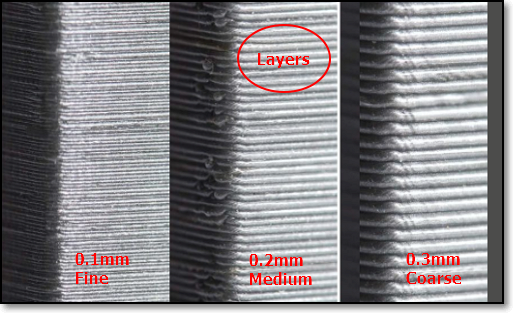

3D Printing (1 June)
Introduction
3D printing or additive manufacturing is a process of making three dimensional solid objects from a digital file. The creation of a 3D printed object is achieved using additive processes. In an additive process an object is created by laying down successive layers of material until the object is created. Each of these layers can be seen as a thinly sliced horizontal cross-section of the eventual object. 3D printing is the opposite of subtractive manufacturing which is cutting out / hollowing out a piece of metal or plastic with for instance a milling machine. 3D printing enables you to produce complex shapes using less material than traditional manufacturing methods.
The Advantages of 3D Printing:
- puts manufacturing in the hands of the public
- you are able to create almost anything with 3D printing
- ideal for rapid prototyping
The Disadvantages of 3D Printing:
- process is very slow as compared to manufacturing by at least 100 times
- prototypes do not have the strength of actual products
Process of 3D Printing
The process of 3D printing can be broken down as follows:
- Designing process - can be either your own digital model that was created via programs (such as Fusion 360, SketchUp or Rhino) or using a previously designed model from websites such as Thingiverse
- Conversion of design - the design has to be converted into a representable file (such as a .stl or .obj file)
- Converting the layers into instructions for the 3D printer (gcode)
- Printing of 3D object
Types of 3D Printers
There are many types of 3D printers available with different Advantages and Disadvanteges but the ones below are the more commonly used ones:
- FFF (Fused Filament Fabrication) where a filament is heated/fused and deposited a layer at a time.
- SLA (Stereolithography) uses a photochemical process which places a chemical/resin and uses a light source to harden each layer.
- SLS (Selective Layer Sintering) is a technique that uses a laser as a power source to sinter/fuse powdered material at points to create a solid structure.
We are mainly using the FFF. There are two types of FFF printers.
- Cartesian, where it moves in X-Y-Z direction
- Delta, where it moves in a polar-Z direction

Click to enlarge
Below shows the different parts of a FFF printer. It comes in different shapes and sizes but the parts and principles remain the same.

Click to enlarge
Characteristics of a 3D printer
We need to understand the characteristics of our 3D printers before we can start using the slicer software. It helps in the tuning of the software parameters which allows us to have finer, faster and/or stronger prints.
Some characteristics include:
- Layer Height (extruded filament thickness):
- Wall Thickness:
- Infill Percentage:
- Overhang Limit:
- Platform Adhesion:
- Supports:
- Object Placement & Orientation
The height of each printed layer of the 3D print. Thinner layers give finer, smoother surface and more accurate prints but takes longer to print. Ranges from 0.1~0.4mm for a 0.4 nozzle (typical 0.2mm). It also affects the resolution, speed and smoothness of print.
|  |
|---|
| Layer height |
{kind=link}
Controls number of strands required for the thickness of the wall. If the Layer Height = 0.2mm, then a wall thickness of 1mm will require 5 strands laid side-by-side. Thicker walls give stronger prints but takes longer to print. Typical wall thickness is min 0.8mm.
 |
|---|
| Wall Thickness |
Controls the amount of material in the internal cavities. Higher infills give more strength, but take longer to print. You can select different infill patterns. Typical infills 10~18%.
 |
|---|
| Infill |
Refers to the prints between 2 points that have no connection to each other where there is no layer below the area between the two points when bridging. Hence, printing must be done in the air so that the gap can be bridged. There is a limit before the print fails and sagging strands appear. The maximum distance for each printer must be tested. This also affects the quality of the print.
 |
|---|
| Bridging |
3D printers cannot print on "air" so there is a limit. There is a limit where there is insufficient support to handle the print and it is usually above 45 degrees. We can perform a test print to determine your printer’s limits (You can find examples in Thingiverse!)
 |
|---|
| Overhang |
The print bed is usually heated to improve adhesion. Sometimes, the print object requires help in adhering to the print bed. Skirts are used to provide an outline - no adhesion. Brims allow some adhesion to the print perimeter. Rafts are full platforms on which the 3D print is placed. Print adhesion is onto the raft instead of the bed.
 |
|---|
| Platform Adhesion |
They are used to aid in printing overhangs and make impposible prints possible. Supports are removed after the print is complete. They add to the print time as well as the touch-up and finishing time to the model. Orientation of the model helps in the determining of supports.
| Supports On | Supports Off |
{kind=link}
The placement of the object plays an important role in the success of the print. Changing the orientation can improve the adhesion and limit the use of supports. Use the Rotate feature to change the orientation and the Place on bed feature to ensure proper placement on the print bed.
| Object Placement & Orientation |
{kind=link}